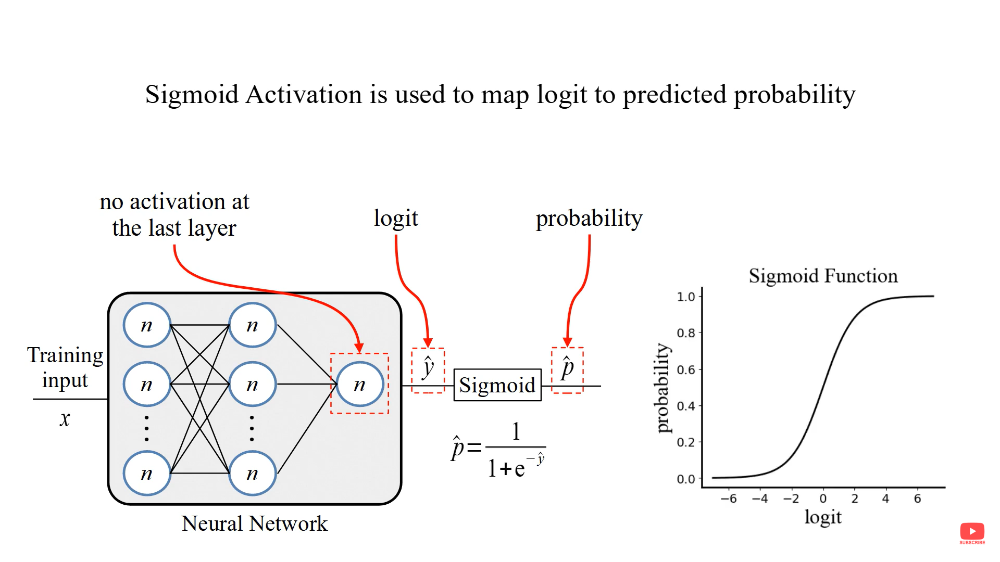

# !pip install torch torchvisionKnowledge Distillation Implementation 1/3
Tech
1. Soft Label Distillation
Knowledge Distillation
1. Knowledge Distillation technique using Soft Targets, also known as Soft Label Distillation or Logits Distillation.
Soft Targets (Logits Distillation): The student model is trained not only on the hard labels (i.e., the ground truth labels), but also on the soft targets provided by the teacher model. The soft targets are the probabilities output by the teacher model after applying a temperature scaling to the logits (pre-softmax outputs).
An intuitive example of hard and soft targets for knowledge distillation:
The output of the network with no activation function is Logit.

Soft Label

Temperature (T):
Think of the temperature as a dial that controls how “sharp” or “smooth” the teacher model’s predictions are. Normally, when a model makes predictions, it assigns high confidence to one class (the correct one) and very low confidence to others. This results in a “spiky” output, where one class has a high probability, and all others are close to zero.
Softening:
“Softening” refers to this process of making the output probabilities smoother (less sharp) when the temperature is increased. It’s called softening because the output becomes “softer” and less certain, giving some probability to even incorrect classes. This softened output is called soft targets.
Reference:
- Hinton, G., Vinyals, O., & Dean, J. (2015). Distilling the Knowledge in a Neural Network. arXiv preprint arXiv:1503.02531. Retrieved from https://arxiv.org/abs/1503.02531
- https://www.youtube.com/watch?v=zhrfBCNSO1Q
- https://www.youtube.com/watch?v=G0_lB1Ce65c&list=PLRhS6hiNUzERWXK6KE150aS8MJg-sVUCB&index=2
- https://pytorch.org/tutorials/beginner/knowledge_distillation_tutorial.html
import torch
import torch.nn as nn
import torch.optim as optim
from torchvision import datasets, models, transforms
from torch.utils.data import DataLoader
import numpy as np
import timeLoad the Dataset
Preprocess the Imagenette2-320 dataset. Apply transforms to the images (resizing, normalization, etc.).
The input images are RGB, so they have 3 channels and are 32x32 pixels. Basically, each image is described by 3 x 32 x 32 = 3072 numbers ranging from 0 to 255. A common practice in neural networks is to normalize the input, which is done for multiple reasons, including avoiding saturation in commonly used activation functions and increasing numerical stability. Our normalization process consists of subtracting the mean and dividing by the standard deviation along each channel. The tensors “mean=[0.485, 0.456, 0.406]” and “std=[0.229, 0.224, 0.225]” were already computed, and they represent the mean and standard deviation of each channel in the predefined subset of dataset intended to be the training set. (https://pytorch.org/tutorials/beginner/knowledge_distillation_tutorial.html)
# Image Preprocessing and Augmentation
data_transforms = {
'train': transforms.Compose([
transforms.RandomResizedCrop(224),
transforms.RandomHorizontalFlip(),
transforms.ToTensor(),
transforms.Normalize([0.485, 0.456, 0.406], [0.229, 0.224, 0.225])
]),
'val': transforms.Compose([
transforms.Resize(256),
transforms.CenterCrop(224),
transforms.ToTensor(),
transforms.Normalize([0.485, 0.456, 0.406], [0.229, 0.224, 0.225])
]),
}
# Load Dataset
data_dir = './data/imagenette2-320/imagenette2-320'
image_datasets = {x: datasets.ImageFolder(root=f"{data_dir}/{x}", transform=data_transforms[x])
for x in ['train', 'val']}
dataloaders = {x: DataLoader(image_datasets[x], batch_size=32, shuffle=True, num_workers=4)
for x in ['train', 'val']}
dataset_sizes = {x: len(image_datasets[x]) for x in ['train', 'val']}
class_names = image_datasets['train'].classes
device = torch.device("cuda:0" if torch.cuda.is_available() else "cpu")Define the Teacher and Student Models: teacher (ResNet50) and student (ResNet18)
# Load Teacher (ResNet50) and Student (ResNet18)
teacher_model = models.resnet50(pretrained=True)
student_model = models.resnet18(pretrained=True)
# Modify the last layer to match the number of classes (Imagenette has 10 classes)
num_ftrs_teacher = teacher_model.fc.in_features
teacher_model.fc = nn.Linear(num_ftrs_teacher, 10)
num_ftrs_student = student_model.fc.in_features
student_model.fc = nn.Linear(num_ftrs_student, 10)
# Move models to the appropriate device (GPU if available)
teacher_model = teacher_model.to(device)
student_model = student_model.to(device)
# Set teacher to evaluation mode, as its weights are frozen
teacher_model.eval()Downloading: "https://download.pytorch.org/models/resnet50-0676ba61.pth" to C:\Users\layal/.cache\torch\hub\checkpoints\resnet50-0676ba61.pthDownloading: "https://download.pytorch.org/models/resnet18-f37072fd.pth" to C:\Users\layal/.cache\torch\hub\checkpoints\resnet18-f37072fd.pthResNet(
(conv1): Conv2d(3, 64, kernel_size=(7, 7), stride=(2, 2), padding=(3, 3), bias=False)
(bn1): BatchNorm2d(64, eps=1e-05, momentum=0.1, affine=True, track_running_stats=True)
(relu): ReLU(inplace=True)
(maxpool): MaxPool2d(kernel_size=3, stride=2, padding=1, dilation=1, ceil_mode=False)
(layer1): Sequential(
(0): Bottleneck(
(conv1): Conv2d(64, 64, kernel_size=(1, 1), stride=(1, 1), bias=False)
(bn1): BatchNorm2d(64, eps=1e-05, momentum=0.1, affine=True, track_running_stats=True)
(conv2): Conv2d(64, 64, kernel_size=(3, 3), stride=(1, 1), padding=(1, 1), bias=False)
(bn2): BatchNorm2d(64, eps=1e-05, momentum=0.1, affine=True, track_running_stats=True)
(conv3): Conv2d(64, 256, kernel_size=(1, 1), stride=(1, 1), bias=False)
(bn3): BatchNorm2d(256, eps=1e-05, momentum=0.1, affine=True, track_running_stats=True)
(relu): ReLU(inplace=True)
(downsample): Sequential(
(0): Conv2d(64, 256, kernel_size=(1, 1), stride=(1, 1), bias=False)
(1): BatchNorm2d(256, eps=1e-05, momentum=0.1, affine=True, track_running_stats=True)
)
)
(1): Bottleneck(
(conv1): Conv2d(256, 64, kernel_size=(1, 1), stride=(1, 1), bias=False)
(bn1): BatchNorm2d(64, eps=1e-05, momentum=0.1, affine=True, track_running_stats=True)
(conv2): Conv2d(64, 64, kernel_size=(3, 3), stride=(1, 1), padding=(1, 1), bias=False)
(bn2): BatchNorm2d(64, eps=1e-05, momentum=0.1, affine=True, track_running_stats=True)
(conv3): Conv2d(64, 256, kernel_size=(1, 1), stride=(1, 1), bias=False)
(bn3): BatchNorm2d(256, eps=1e-05, momentum=0.1, affine=True, track_running_stats=True)
(relu): ReLU(inplace=True)
)
(2): Bottleneck(
(conv1): Conv2d(256, 64, kernel_size=(1, 1), stride=(1, 1), bias=False)
(bn1): BatchNorm2d(64, eps=1e-05, momentum=0.1, affine=True, track_running_stats=True)
(conv2): Conv2d(64, 64, kernel_size=(3, 3), stride=(1, 1), padding=(1, 1), bias=False)
(bn2): BatchNorm2d(64, eps=1e-05, momentum=0.1, affine=True, track_running_stats=True)
(conv3): Conv2d(64, 256, kernel_size=(1, 1), stride=(1, 1), bias=False)
(bn3): BatchNorm2d(256, eps=1e-05, momentum=0.1, affine=True, track_running_stats=True)
(relu): ReLU(inplace=True)
)
)
(layer2): Sequential(
(0): Bottleneck(
(conv1): Conv2d(256, 128, kernel_size=(1, 1), stride=(1, 1), bias=False)
(bn1): BatchNorm2d(128, eps=1e-05, momentum=0.1, affine=True, track_running_stats=True)
(conv2): Conv2d(128, 128, kernel_size=(3, 3), stride=(2, 2), padding=(1, 1), bias=False)
(bn2): BatchNorm2d(128, eps=1e-05, momentum=0.1, affine=True, track_running_stats=True)
(conv3): Conv2d(128, 512, kernel_size=(1, 1), stride=(1, 1), bias=False)
(bn3): BatchNorm2d(512, eps=1e-05, momentum=0.1, affine=True, track_running_stats=True)
(relu): ReLU(inplace=True)
(downsample): Sequential(
(0): Conv2d(256, 512, kernel_size=(1, 1), stride=(2, 2), bias=False)
(1): BatchNorm2d(512, eps=1e-05, momentum=0.1, affine=True, track_running_stats=True)
)
)
(1): Bottleneck(
(conv1): Conv2d(512, 128, kernel_size=(1, 1), stride=(1, 1), bias=False)
(bn1): BatchNorm2d(128, eps=1e-05, momentum=0.1, affine=True, track_running_stats=True)
(conv2): Conv2d(128, 128, kernel_size=(3, 3), stride=(1, 1), padding=(1, 1), bias=False)
(bn2): BatchNorm2d(128, eps=1e-05, momentum=0.1, affine=True, track_running_stats=True)
(conv3): Conv2d(128, 512, kernel_size=(1, 1), stride=(1, 1), bias=False)
(bn3): BatchNorm2d(512, eps=1e-05, momentum=0.1, affine=True, track_running_stats=True)
(relu): ReLU(inplace=True)
)
(2): Bottleneck(
(conv1): Conv2d(512, 128, kernel_size=(1, 1), stride=(1, 1), bias=False)
(bn1): BatchNorm2d(128, eps=1e-05, momentum=0.1, affine=True, track_running_stats=True)
(conv2): Conv2d(128, 128, kernel_size=(3, 3), stride=(1, 1), padding=(1, 1), bias=False)
(bn2): BatchNorm2d(128, eps=1e-05, momentum=0.1, affine=True, track_running_stats=True)
(conv3): Conv2d(128, 512, kernel_size=(1, 1), stride=(1, 1), bias=False)
(bn3): BatchNorm2d(512, eps=1e-05, momentum=0.1, affine=True, track_running_stats=True)
(relu): ReLU(inplace=True)
)
(3): Bottleneck(
(conv1): Conv2d(512, 128, kernel_size=(1, 1), stride=(1, 1), bias=False)
(bn1): BatchNorm2d(128, eps=1e-05, momentum=0.1, affine=True, track_running_stats=True)
(conv2): Conv2d(128, 128, kernel_size=(3, 3), stride=(1, 1), padding=(1, 1), bias=False)
(bn2): BatchNorm2d(128, eps=1e-05, momentum=0.1, affine=True, track_running_stats=True)
(conv3): Conv2d(128, 512, kernel_size=(1, 1), stride=(1, 1), bias=False)
(bn3): BatchNorm2d(512, eps=1e-05, momentum=0.1, affine=True, track_running_stats=True)
(relu): ReLU(inplace=True)
)
)
(layer3): Sequential(
(0): Bottleneck(
(conv1): Conv2d(512, 256, kernel_size=(1, 1), stride=(1, 1), bias=False)
(bn1): BatchNorm2d(256, eps=1e-05, momentum=0.1, affine=True, track_running_stats=True)
(conv2): Conv2d(256, 256, kernel_size=(3, 3), stride=(2, 2), padding=(1, 1), bias=False)
(bn2): BatchNorm2d(256, eps=1e-05, momentum=0.1, affine=True, track_running_stats=True)
(conv3): Conv2d(256, 1024, kernel_size=(1, 1), stride=(1, 1), bias=False)
(bn3): BatchNorm2d(1024, eps=1e-05, momentum=0.1, affine=True, track_running_stats=True)
(relu): ReLU(inplace=True)
(downsample): Sequential(
(0): Conv2d(512, 1024, kernel_size=(1, 1), stride=(2, 2), bias=False)
(1): BatchNorm2d(1024, eps=1e-05, momentum=0.1, affine=True, track_running_stats=True)
)
)
(1): Bottleneck(
(conv1): Conv2d(1024, 256, kernel_size=(1, 1), stride=(1, 1), bias=False)
(bn1): BatchNorm2d(256, eps=1e-05, momentum=0.1, affine=True, track_running_stats=True)
(conv2): Conv2d(256, 256, kernel_size=(3, 3), stride=(1, 1), padding=(1, 1), bias=False)
(bn2): BatchNorm2d(256, eps=1e-05, momentum=0.1, affine=True, track_running_stats=True)
(conv3): Conv2d(256, 1024, kernel_size=(1, 1), stride=(1, 1), bias=False)
(bn3): BatchNorm2d(1024, eps=1e-05, momentum=0.1, affine=True, track_running_stats=True)
(relu): ReLU(inplace=True)
)
(2): Bottleneck(
(conv1): Conv2d(1024, 256, kernel_size=(1, 1), stride=(1, 1), bias=False)
(bn1): BatchNorm2d(256, eps=1e-05, momentum=0.1, affine=True, track_running_stats=True)
(conv2): Conv2d(256, 256, kernel_size=(3, 3), stride=(1, 1), padding=(1, 1), bias=False)
(bn2): BatchNorm2d(256, eps=1e-05, momentum=0.1, affine=True, track_running_stats=True)
(conv3): Conv2d(256, 1024, kernel_size=(1, 1), stride=(1, 1), bias=False)
(bn3): BatchNorm2d(1024, eps=1e-05, momentum=0.1, affine=True, track_running_stats=True)
(relu): ReLU(inplace=True)
)
(3): Bottleneck(
(conv1): Conv2d(1024, 256, kernel_size=(1, 1), stride=(1, 1), bias=False)
(bn1): BatchNorm2d(256, eps=1e-05, momentum=0.1, affine=True, track_running_stats=True)
(conv2): Conv2d(256, 256, kernel_size=(3, 3), stride=(1, 1), padding=(1, 1), bias=False)
(bn2): BatchNorm2d(256, eps=1e-05, momentum=0.1, affine=True, track_running_stats=True)
(conv3): Conv2d(256, 1024, kernel_size=(1, 1), stride=(1, 1), bias=False)
(bn3): BatchNorm2d(1024, eps=1e-05, momentum=0.1, affine=True, track_running_stats=True)
(relu): ReLU(inplace=True)
)
(4): Bottleneck(
(conv1): Conv2d(1024, 256, kernel_size=(1, 1), stride=(1, 1), bias=False)
(bn1): BatchNorm2d(256, eps=1e-05, momentum=0.1, affine=True, track_running_stats=True)
(conv2): Conv2d(256, 256, kernel_size=(3, 3), stride=(1, 1), padding=(1, 1), bias=False)
(bn2): BatchNorm2d(256, eps=1e-05, momentum=0.1, affine=True, track_running_stats=True)
(conv3): Conv2d(256, 1024, kernel_size=(1, 1), stride=(1, 1), bias=False)
(bn3): BatchNorm2d(1024, eps=1e-05, momentum=0.1, affine=True, track_running_stats=True)
(relu): ReLU(inplace=True)
)
(5): Bottleneck(
(conv1): Conv2d(1024, 256, kernel_size=(1, 1), stride=(1, 1), bias=False)
(bn1): BatchNorm2d(256, eps=1e-05, momentum=0.1, affine=True, track_running_stats=True)
(conv2): Conv2d(256, 256, kernel_size=(3, 3), stride=(1, 1), padding=(1, 1), bias=False)
(bn2): BatchNorm2d(256, eps=1e-05, momentum=0.1, affine=True, track_running_stats=True)
(conv3): Conv2d(256, 1024, kernel_size=(1, 1), stride=(1, 1), bias=False)
(bn3): BatchNorm2d(1024, eps=1e-05, momentum=0.1, affine=True, track_running_stats=True)
(relu): ReLU(inplace=True)
)
)
(layer4): Sequential(
(0): Bottleneck(
(conv1): Conv2d(1024, 512, kernel_size=(1, 1), stride=(1, 1), bias=False)
(bn1): BatchNorm2d(512, eps=1e-05, momentum=0.1, affine=True, track_running_stats=True)
(conv2): Conv2d(512, 512, kernel_size=(3, 3), stride=(2, 2), padding=(1, 1), bias=False)
(bn2): BatchNorm2d(512, eps=1e-05, momentum=0.1, affine=True, track_running_stats=True)
(conv3): Conv2d(512, 2048, kernel_size=(1, 1), stride=(1, 1), bias=False)
(bn3): BatchNorm2d(2048, eps=1e-05, momentum=0.1, affine=True, track_running_stats=True)
(relu): ReLU(inplace=True)
(downsample): Sequential(
(0): Conv2d(1024, 2048, kernel_size=(1, 1), stride=(2, 2), bias=False)
(1): BatchNorm2d(2048, eps=1e-05, momentum=0.1, affine=True, track_running_stats=True)
)
)
(1): Bottleneck(
(conv1): Conv2d(2048, 512, kernel_size=(1, 1), stride=(1, 1), bias=False)
(bn1): BatchNorm2d(512, eps=1e-05, momentum=0.1, affine=True, track_running_stats=True)
(conv2): Conv2d(512, 512, kernel_size=(3, 3), stride=(1, 1), padding=(1, 1), bias=False)
(bn2): BatchNorm2d(512, eps=1e-05, momentum=0.1, affine=True, track_running_stats=True)
(conv3): Conv2d(512, 2048, kernel_size=(1, 1), stride=(1, 1), bias=False)
(bn3): BatchNorm2d(2048, eps=1e-05, momentum=0.1, affine=True, track_running_stats=True)
(relu): ReLU(inplace=True)
)
(2): Bottleneck(
(conv1): Conv2d(2048, 512, kernel_size=(1, 1), stride=(1, 1), bias=False)
(bn1): BatchNorm2d(512, eps=1e-05, momentum=0.1, affine=True, track_running_stats=True)
(conv2): Conv2d(512, 512, kernel_size=(3, 3), stride=(1, 1), padding=(1, 1), bias=False)
(bn2): BatchNorm2d(512, eps=1e-05, momentum=0.1, affine=True, track_running_stats=True)
(conv3): Conv2d(512, 2048, kernel_size=(1, 1), stride=(1, 1), bias=False)
(bn3): BatchNorm2d(2048, eps=1e-05, momentum=0.1, affine=True, track_running_stats=True)
(relu): ReLU(inplace=True)
)
)
(avgpool): AdaptiveAvgPool2d(output_size=(1, 1))
(fc): Linear(in_features=2048, out_features=10, bias=True)
)Knowledge Distillation Loss
Distillation Loss: The loss function used combines:
- Cross-Entropy Loss (Hard Labels): This is the standard supervised learning loss between the student model’s predictions and the true labels.
- Kullback-Leibler (KL) Divergence Loss (Soft Labels): This measures how closely the student model’s softened output distribution aligns with the teacher’s softened output distribution.
Formula Used for Knowledge Distillation Loss:
The distillation loss function is expressed as:
\[ L_{\text{KD}} = \alpha \cdot T^2 \cdot \text{KL}(p_{\text{teacher}}, p_{\text{student}}) + (1 - \alpha) \cdot L_{\text{CE}}(y_{\text{true}}, p_{\text{student}}) \]
Where:
\(p_{\text{teacher}}\) is the soft probability distribution from the teacher model.
\(p_{\text{student}}\) is the soft probability distribution from the student model.
\(L_{\text{CE}}\) is the cross-entropy loss.
\(\alpha\) is a hyperparameter to control the contribution of the soft targets.
\(T\) is the temperature scaling factor applied to both teacher and student logits.
class DistillationLoss(nn.Module):
def __init__(self, temperature=3.0, alpha=0.5):
super(DistillationLoss, self).__init__()
self.temperature = temperature
self.alpha = alpha
self.kl_div_loss = nn.KLDivLoss(reduction='batchmean')
self.ce_loss = nn.CrossEntropyLoss()
def forward(self, student_logits, teacher_logits, labels):
# Soft targets: apply temperature scaling to teacher outputs
teacher_soft = torch.softmax(teacher_logits / self.temperature, dim=1)
student_soft = torch.log_softmax(student_logits / self.temperature, dim=1)
# Distillation loss (KL divergence between student and teacher's softened outputs)
distillation_loss = self.kl_div_loss(student_soft, teacher_soft) * (self.temperature ** 2)
# Cross entropy loss (between student predictions and true labels)
student_loss = self.ce_loss(student_logits, labels)
# Combined loss
return self.alpha * distillation_loss + (1.0 - self.alpha) * student_lossTraining Loop
def train_student(teacher_model, student_model, dataloaders, criterion, optimizer, num_epochs=25):
since = time.time()
best_model_wts = student_model.state_dict()
best_acc = 0.0
for epoch in range(num_epochs):
print(f'Epoch {epoch}/{num_epochs - 1}')
print('-' * 10)
# Training phase
student_model.train()
running_loss = 0.0
running_corrects = 0
# Iterate over data
for inputs, labels in dataloaders['train']:
inputs = inputs.to(device)
labels = labels.to(device)
# Zero the parameter gradients
optimizer.zero_grad()
# Forward pass through both teacher and student
with torch.no_grad():
teacher_outputs = teacher_model(inputs)
student_outputs = student_model(inputs)
# Compute loss
loss = criterion(student_outputs, teacher_outputs, labels)
# Backward and optimize
loss.backward()
optimizer.step()
# Statistics
_, preds = torch.max(student_outputs, 1)
running_loss += loss.item() * inputs.size(0)
running_corrects += torch.sum(preds == labels.data)
epoch_loss = running_loss / dataset_sizes['train']
epoch_acc = running_corrects.double() / dataset_sizes['train']
print(f'Loss: {epoch_loss:.4f} Acc: {epoch_acc:.4f}')
# Copy the best model
if epoch_acc > best_acc:
best_acc = epoch_acc
best_model_wts = student_model.state_dict()
time_elapsed = time.time() - since
print(f'Training complete in {time_elapsed // 60:.0f}m {time_elapsed % 60:.0f}s')
print(f'Best Acc: {best_acc:4f}')
# Load best model weights
student_model.load_state_dict(best_model_wts)
return student_modelOptimizer and Hyperparameters
- SGD is a popular optimizer for training neural networks and has been widely used in training large architectures like ResNet. It’s particularly good at providing a regularized, stable learning process when the learning rate is tuned properly. It avoids overfitting and promotes generalization when combined with momentum.
- Momentum (0.9) helps in accelerating gradients and converging faster by averaging out noise in gradient updates, preventing the optimizer from oscillating as much.
- Learning Rate 0.01 is a common learning rate for large-scale training tasks with SGD. It is not too large to cause unstable updates, nor too small to slow down learning excessively.
- Temperature scaling is used to control the softness of the teacher model’s output probability distribution. Higher temperatures produce softer probability distributions, revealing more about the relationships between different classes. A value of 3.0 is commonly used in knowledge distillation to smooth out the logits from the teacher model and make the student focus more on the relative probabilities assigned by the teacher model, rather than just the highest-probability class.
- Alpha controls the balance between the soft labels (from the teacher) and the hard labels (from the ground truth). A value of 0.5 equally weights the contribution from both the distillation loss (soft labels) and the cross-entropy loss (hard labels). This balance is crucial when training on datasets like Imagenette, where both the ground truth labels and the teacher’s soft predictions carry valuable information. You may adjust this value depending on how much you want the student model to prioritize learning from the teacher versus learning from the original ground truth. For example: If the teacher’s knowledge is highly reliable, you might increase alpha (> 0.5) to emphasize learning from the teacher’s soft targets. If the ground truth labels are of high quality, you might decrease alpha (< 0.5) to rely more on the hard labels.
# Define optimizer for the student model
optimizer = optim.SGD(student_model.parameters(), lr=0.01, momentum=0.9)
# Define the distillation loss
criterion = DistillationLoss(temperature=3.0, alpha=0.5)
# Train the student model
trained_student = train_student(teacher_model, student_model, dataloaders, criterion, optimizer, num_epochs=25)Epoch 0/24
----------
Loss: 0.6731 Acc: 0.8762
Epoch 1/24
----------
Loss: 0.6200 Acc: 0.9182
Epoch 2/24
----------
Loss: 0.5981 Acc: 0.9310
Epoch 3/24
----------
Loss: 0.5907 Acc: 0.9364
Epoch 4/24
----------
Loss: 0.5797 Acc: 0.9427
Epoch 5/24
----------
Loss: 0.5728 Acc: 0.9468
Epoch 6/24
----------
Loss: 0.5677 Acc: 0.9465
Epoch 7/24
----------
Loss: 0.5639 Acc: 0.9492
Epoch 8/24
----------
Loss: 0.5581 Acc: 0.9494
Epoch 9/24
----------
Loss: 0.5515 Acc: 0.9538
Epoch 10/24
----------
Loss: 0.5536 Acc: 0.9537
Epoch 11/24
----------
Loss: 0.5467 Acc: 0.9586
Epoch 12/24
----------
Loss: 0.5463 Acc: 0.9554
Epoch 13/24
----------
Loss: 0.5459 Acc: 0.9559
Epoch 14/24
----------
Loss: 0.5440 Acc: 0.9566
Epoch 15/24
----------
Loss: 0.5399 Acc: 0.9611
Epoch 16/24
----------
Loss: 0.5358 Acc: 0.9637
Epoch 17/24
----------
Loss: 0.5318 Acc: 0.9639
Epoch 18/24
----------
Loss: 0.5336 Acc: 0.9612
Epoch 19/24
----------
Loss: 0.5262 Acc: 0.9666
Epoch 20/24
----------
Loss: 0.5318 Acc: 0.9631
Epoch 21/24
----------
Loss: 0.5313 Acc: 0.9622
Epoch 22/24
----------
Loss: 0.5245 Acc: 0.9678
Epoch 23/24
----------
Loss: 0.5258 Acc: 0.9657
Epoch 24/24
----------
Loss: 0.5243 Acc: 0.9640
Training complete in 517m 41s
Best Acc: 0.967790Evaluation
def evaluate_model(model, dataloaders):
model.eval() # Set to evaluation mode
running_corrects = 0
for inputs, labels in dataloaders['val']:
inputs = inputs.to(device)
labels = labels.to(device)
with torch.no_grad(): # No need to compute gradients during evaluation
outputs = model(inputs)
_, preds = torch.max(outputs, 1)
running_corrects += torch.sum(preds == labels.data)
accuracy = running_corrects.double() / dataset_sizes['val']
print(f'Validation Accuracy: {accuracy:.4f}')
# Evaluate trained student model
evaluate_model(trained_student, dataloaders)Validation Accuracy: 0.9809